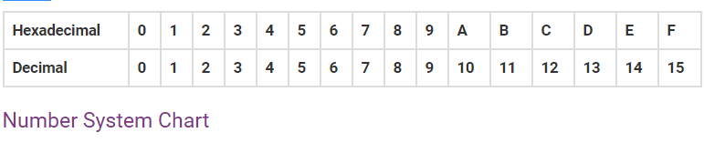

Learnopedia
NUMBER SYSTEM
What is Number System in Maths?
A number system is defined as a system of writing to express numbers. It is the mathematical notation for representing numbers of a given set by using digits or other symbols in a consistent manner. It provides a unique representation of every number and represents the arithmetic and algebraic structure of the figures. It also allows us to operate arithmetic operations like addition, subtraction and division.
The value of any digit in a number can be determined by:
Types of Number System
There are various types of number system in mathematics. The four most common number system types are:
Decimal Number System (Base 10 Number System)
Decimal number system has base 10 because it uses ten digits from 0 to 9. In the decimal number system, the positions successive to the left of the decimal point represent units, tens, hundreds, thousands and so on. This system is expressed in decimal numbers. Every position shows a particular power of the base (10).
For example, the decimal number 1457 consists of the digit 7 in the units position, 5 in the tens place, 4 in the hundreds position, and 1 in the thousands place whose value can be written as (1×103) + (4×102) + (5×101) + (7×100) (1×1000) + (4×100) + (5×10) + (7×1) 1000 + 400 + 50 + 7 1457
Binary Number System (Base 2 Number System)
The base 2 number system is also known as the Binary number system wherein, only two binary digits exist, i.e., 0 and 1. Specifically, the usual base-2 is a radix of 2. The figures described under this system are known as binary numbers which are the combination of 0 and 1.
For example, 110101 is a binary number. We can convert any system into binary and vice versa.
Octal Number System (Base 8 Number System)
In the octal number system, the base is 8 and it uses numbers from 0 to 7 to represent numbers. Octal numbers are commonly used in computer applications. Converting an octal number to decimal is the same as decimal conversion and is explained below using an example.
Example: Convert 2158 into decimal. Solution: 2158 = 2 × 8*2 + 1 × 8*1 + 5 × 8*0 = 2 × 64 + 1 × 8 + 5 × 1 = 128 + 8 + 5 = 14110
Hexadecimal Number System (Base 16 Number System)
In the hexadecimal system, numbers are written or represented with base 16. In the hex system, the numbers are first represented just like in decimal system, i.e. from 0 to 9. Then, the numbers are represented using the alphabets from A to F. The below-given table shows the representation of numbers in the hexadecimal number system.
Number System Exercises
- Convert (242)10 into hexadecimal. [Answer: (F2)16]
- Convert 0.52 into an octal number. [Answer: 4121]
- Subtract 11012 and 10102. [Answer: 0010]
- Represent 5C6 in decimal. [Answer:1478]
- Represent binary number 1.1 in decimal. [Answer: 1.5]